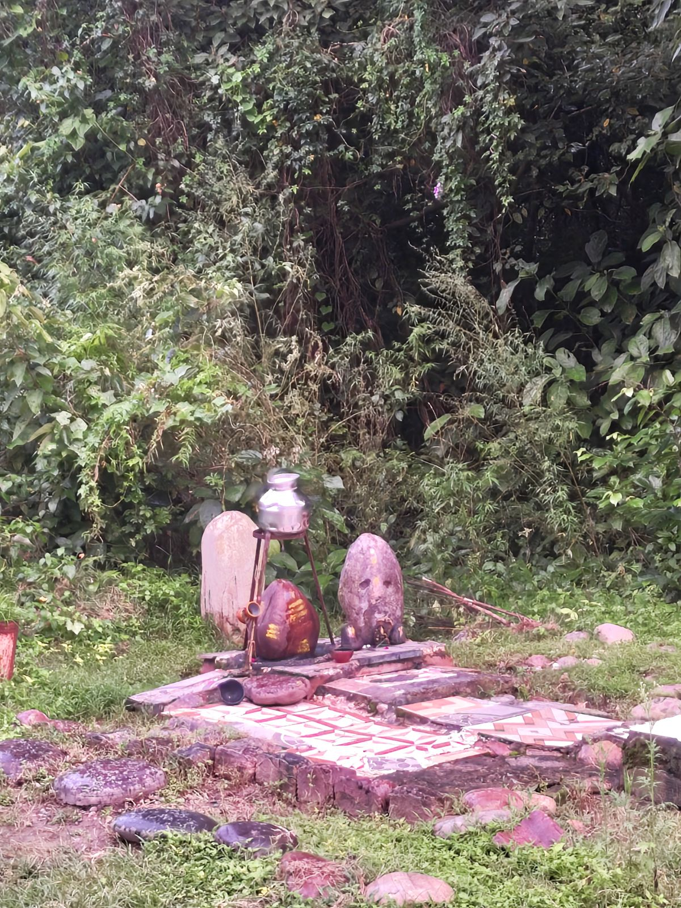
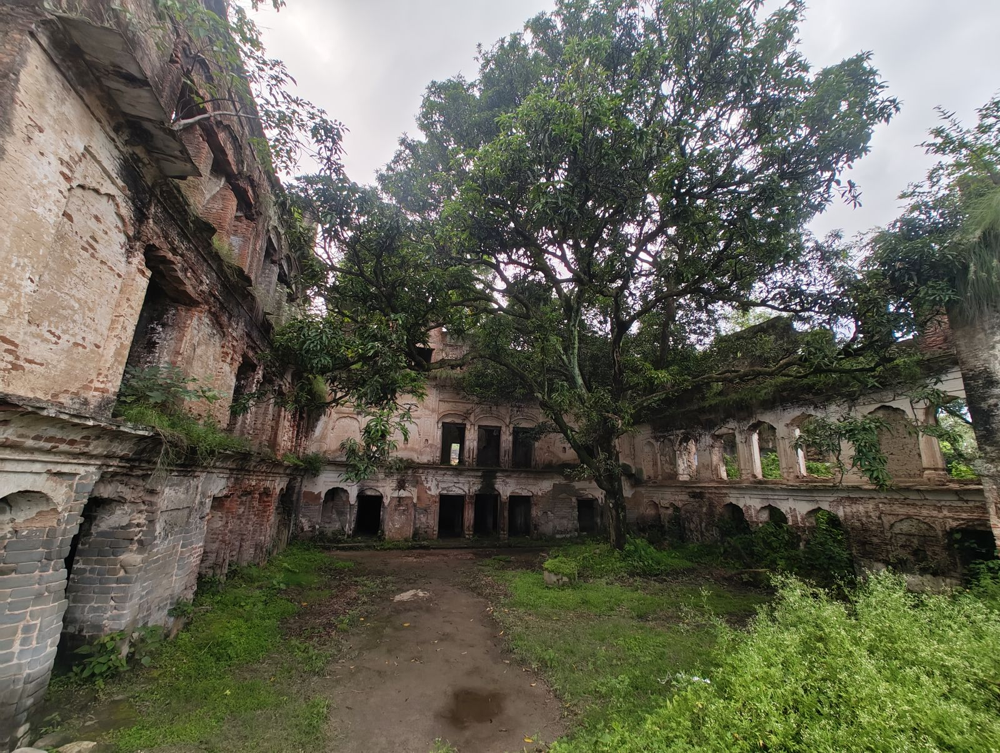
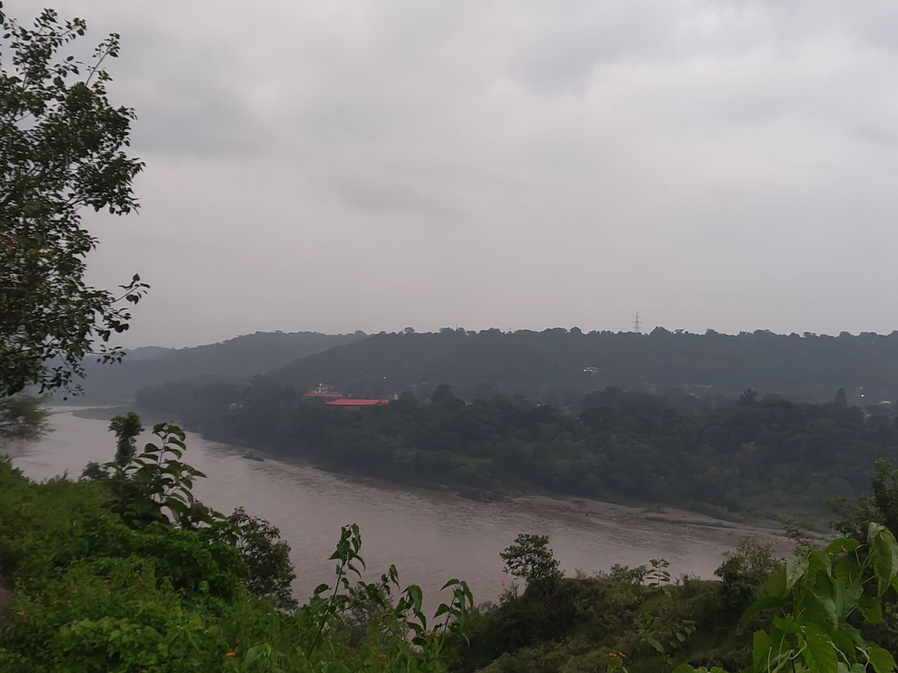
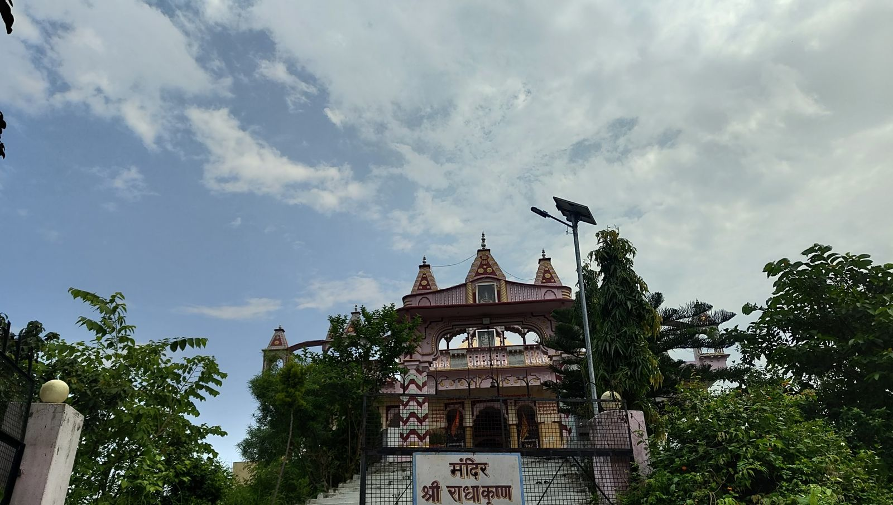

31 August to 6 September 2026Nothing happened, according to me
PUBLISHED 7 SEPTEMBER 2026
Monday
I woke at seven and spent a while deciding whether to go home or stay another day.
Normally there is no argument. My screens are at home and the setup makes the work easy, so home wins. But it was a bank holiday in the UK, which means I still had to log in and had almost nothing to do once I had. So with very little pushing from Massi and my cousins, I stayed.
Then I caught up on Bleach, which I had been stacking on purpose so I could watch a run of it in one go. Worked exactly as planned.
Logged in at one. With no work in sight I did tomorrow's work instead, which is the first time in recorded history it has gone in that direction. Usually it is the other way round, hehe.
Then Appu di and I played Monopoly Deal, which I taught her last time I was here. Good game. I won all of them, which goes without saying at this point.
By evening the weather was good enough that Pranjal, Appu di and I went out to a viewpoint.


Pranjal says that one was the king's old residence. I have not checked with anybody and I am not going to. There is a mango tree growing out of the middle of it now.
Then it started raining, and then it escalated very suddenly, and we were soaked. We took shelter in a building by the road until it settled.
Then Pranjal took us to a second spot.

Pranjal knows every viewpoint in that town. Every single one. I have some theories as to why. Wink wink.
Home around seven, and an earful from Massi about wandering around in the rain, which was fair. Showered, then wrote last week's note while still damp, which is a thing I mentioned in last week's note while it was happening.
Packed my bag. Dinner. A call from Gaurav and some school friends. Slept.
Tuesday
Woke up to a sky that was clearly about to open. Brushed, packed the last few things, and skipped breakfast because I had no appetite.
Goodbyes to Massi and Appu di by nine, and Pranjal dropped me off. Auto to Jawalaji bus stand, bus to Chintpurni, cab from there. Home by eleven.
Shower, breakfast, a bit of rest, a black coffee, and then work.
The rest of the day went like that. I played some PUBG with Simar, a friend from work, and beat him badly in a 1v1.
And that is the thing. Nothing interesting usually happens, and all the days look the same when I do not go anywhere. That is one of the reasons I started writing this. So I can notice the pattern, and do something about the loop.
Wednesday
Same again. Woke up late, same day over.
Except by now the group I had almost gone to Meghalaya with had arrived in Meghalaya, and the streaks and stories started coming in. So I was salty for the entire day.
Which is what finally made me start something I had been putting off for a long time. Job hunting.
Rest of the day was work, beating Simar, and logging out.
Thursday and Friday
Almost nothing, apart from starting cardistry, which I had been meaning to do for ages. I can do a proper ribbon spread now and a couple of other things.

Friday was Janmashtami, so I was up at eight and my mum sent me to the Radha Krishan mandir, and I went.
Saturday
Aman's wedding is close and I still had no outfit, so I went to Hoshiarpur, where there is a studio that sorts this kind of problem properly.
I was there by half nine and the place opened at ten, so I got a haircut in the gap.
Two hours of going back and forth over fabrics and styles, and the order is in. It should be ready this Saturday, so you will see how it turned out next week.
Free by one or half one, so I went to the McDonald's next door and thought about Burger King the entire time.
Back in Chintpurni by three, and before going home I stopped at The Shailyas for my usual peri peri fries.
They were not right. Not bad exactly, just not what they have always been. Either they have changed something or I have, and I do not know which. I have been ordering the same thing there for years and this is the first time it has not been the thing I came for.
Home by four, showered, lay down, and the rest of the weekend went past without leaving a mark.
Sunday
Nothing worth writing. It is what it is.
The loop
I wrote something on Tuesday without thinking about it much, stuck in the middle of a paragraph about a cab and a game of PUBG. That nothing interesting usually happens. That the days all look the same when I do not go anywhere. That noticing the pattern is one of the reasons I started this.
So here is this week's pattern.
It felt like I did nothing. Then I wrote it down and there is a soaked viewpoint, a ruined palace with a tree through it, a temple on Janmashtami, a haircut, an outfit ordered for Aman's wedding, and a job hunt I have been avoiding for months.
And I did not start that job hunt because I finally got serious about my career. I started it because I could not go to Meghalaya. Last week that was a no from my manager and a bad night's sleep. This week it was a job hunt.
Not the reason I would have picked. Still counts.
Anyway. The noticing thing works, I guess. Six notes in.